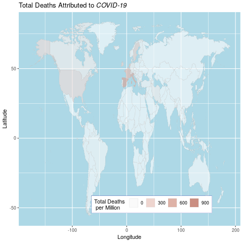
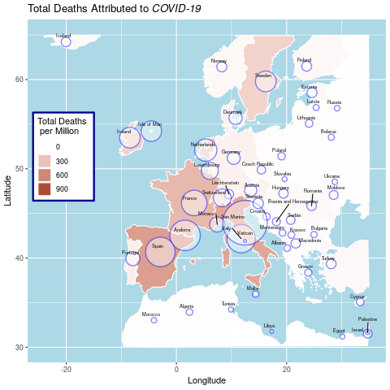

Analysis of COVID Data
Table of Contents
- 1. Preliminary
- 2. Introduction
- 3. Chloropleth Map
- 4. Time Series
- 5. TODO Parallell Co-ordinates
- 6. For Each Visualisation
- 7. Appendix ATTACH
- 8. References
1 Preliminary
1.1 Load Packages and Data
if (require("pacman")) { library(pacman) }else{ install.packages("pacman") library(pacman) } pacman::p_load(xts, sp, gstat, ggplot2, rmarkdown, reshape2, ggmap, parallel, dplyr, plotly, tidyverse, reticulate, UsingR, Rmpfr, swirl, corrplot, gridExtra, mise, latex2exp, tidyverse, xts, maptools, plyr, ggplot2, maps, viridis) mise()
1.2 Load the Data
covid <- read.csv("/home/ryan/Notes/DataSci/Visual_Analytics/Assessment2/owid-covid-data.csv")
1.3 Set Working Directory
2 Introduction
On December 31st 2019 a viral pneumonia was reported in Wuhan, China, this was later found to be a result of a new strain of virus named Sars-CoV2, the diseased caused by such an infection, usually resulting in viral pneumonia, is known as Corona Virus Disease 2019 (COVID-19). The outbreak of this disease was declared a Public Health Emergency of International Concern on the 30th January 2020. 1 December 2012 first cases of COVID-19 were reported, the disease has since attributed to the SARS-CoV2 virus.
A data set detailing the location, deaths, tests and cases related to the
COVID-19 pandemic has been made available through the website /Our World in
Data/2, documented in this report is a visual anylisis
performed entirely using the Free Software 1 R 3
primarily with the ggplot2 package 4 (see listing 20 in the
appendix).
3 Chloropleth Map
A Chloropleth map of the number of deaths can offer an insight into the impact that the disease has had with respect to individual countries.
The Total deaths should be scaled relative to the population of the country, that way countries with a smaller and sparser population will still be represented by the visualisation (this is quite important given that many countries such as Italy have a small population compared to the US and much of Asia 5).
A worldwide Chloropleth map visualising the total number of deaths attributed to COVID-19 is shown in figure 1 and a Europe-centric visualisation is shown in figure 3.
3.1 Discussion
3.1.1 Worldwide
The first plot appears to show a very limited amount of difference in deaths attributable to COVID-19 across regions other than North America and Europe.
While first-world countries such as New Zealand and Australia are somewhat insulated from the disease by virtue of geography and population density, it’s striking that much of Asia and Russia have such low levels of disease incidence.
This could be attributed to the fact that a more power-cetric regime such as in China, Russia, North Korea, etc. may have more capacity to:
- Diminish the spread of the diseasy by implementing
policy decisions,
- whereas countries such as the US and Europe have a much higher expectation of civil liberties and hence much lower tolerance for government intervention.
- Control the spread of information for want of international reputation.
- In saying that though research suggests that under-reporting has even occured in countries such as the US 6 so such under-reporting could merely be incidental.
A similar disease, MERS, emerged in 2012 in Middle-Eastern Regions 7 and a Korean outbreak of the MERS disease occured in 2015 8, these outbreaks likely prepared Korea, the Middle East and other Asian regions for an outbreak which helps explain the dichotomous nature of the deaths attributable to COVID-19 for those Countries.
3.1.2 Europe
A closer look at Europe shows that Belgium and Italy have been the most affected by this disease, it isn’t very clear why those regions have been impacted so significantly, particularly considering the comparatively permissive borders within the EU, but this could be indicative of policy decisions and warrants further research.
3.2 Technique
3.2.1 Woldwide Map
In order to produce a chloropleth map the data must be aggregated in order to retrieve the total number of
deaths, this can be acheived by taking the maximum of the total deaths across
countries (the total number of death rates will be a strictly positive and
monotone trend, otherwise the outbreak would be an entirely different type of
pandemic!), this can be performed by using the aggregate function as
demonstrated in listing 1.
fatalprop <- aggregate(total_deaths_per_million ~ location, covid, max) ## Order the Values in Descending Order fatalprop <- fatalprop[order(-fatalprop$total_deaths_per_million),] ## Rename USA covid$location[covid$location=="United States"] <- "USA"
It is next necessary to rename location to region so map data will be
consistent with the provided data set, this is shown in listing 2.
## Rename to facilitate joining with map names(fatalprop) <- c("region", "total_deaths_per_million")
For a broad overview of the data, small regions such as San Marino and Belgium will not be visible and will skew the colour pallete, so instead they should be removed and instead a seperate plot of Europe will be creted as shown in figure 3, this removal is performed in listing 3.
## San Marino will be shown by italy and this skews the results ## Belgium and San Marino are very hard to visualise from above ## They skew the rsults and so will be removed. fatalprops <- fatalprop %>% filter(region!="San Marino") fatalprops <- fatalprop %>% filter(region!="Belgium")
Next it is necessary to retrieve map data, this can be done using the map_data
function, this data may then be combined by region with the provided data set
using the left_join function, this is shown in listing 4.
## Retrieve the map data some_maps <- map_data("world", region = fatalprops$location) ## Join the Data Frames Together fatalmap <- left_join(fatalprops, some_maps, by = "region")
Finally this data frame can be plotted by using ggplot2 and the geom_map
layer, modifying the theme layer will allow for a natural background to be implemented,
this is demonstrated in listing 5 and the output is provided in figure 1.
wmp <- ggplot(fatalmap, aes(map_id = region)) + geom_map(map = fatalmap, color = "grey", aes(fill = total_deaths_per_million), lwd = 0.1, alpha = 0.6)+ expand_limits(x = fatalmap$long, y = fatalmap$lat)+ scale_fill_gradient(high = "darkred", low = "white") + guides(fill = guide_legend("Total Deaths \n per Million")) + # Change the colors of background # and the color of grid lines to white theme( panel.background = element_rect(fill = "lightblue", colour = "lightblue", size = 0.5, linetype = "solid"), legend.position = c(0.6, 0.1), legend.direction = "horizontal", legend.background = element_rect(fill = "white", size = 0.1, colour = "darkblue", linetype = "solid")) + labs(x = "Longitude", y = "Latitude", title = TeX("Total Deaths Attributed to \\textit{COVID-19}")) # geom_text(data = region_lab_df, aes(y = lat, x = long, label = region), size = 1) wmp

Figure 1: Chloropleth map of total deaths attributed to COVID-19 (per Million people)
A bubble overlay may also be implemented in order make clearer the spread of cases (see section 3.5 for a brief literature review), it is necessary however to adjust the USA location to represent the mainland population centre in order make the visualisation more effective. This is demonstrated in listing 6 and shown in figure 2
# Compute the centroid as the mean longitude and lattitude # Used as label coordinate for country's names region_lab_df <- some.eu.maps %>% group_by(region) %>% summarise(long = mean(long), lat = mean(lat)) %>% full_join(aggregate(total_deaths_per_million ~ region, fatalmap, mean)) # Manually Adjust US to be population Centre region_lab_df[region_lab_df$region == "USA",]$long <- -92.47 region_lab_df[region_lab_df$region == "USA",]$lat <- 37.37 wmp + scale_size_continuous(range = c(1, 9), name = "Total Number \n of Deaths") + guides(size = FALSE) + geom_point(data = region_lab_df, aes(y = lat, x = long, size = total_deaths_per_million), alpha = 0.5, col = "purple")
Figure 2: Chloropleth map with bubble overlay to aid in case visualisation
3.2.2 Europe Centric
The chloropleth map clearly shows that the disease has caused significiantly more fatalities per capita in Europe and so the plot will be adjusted central to Europe.
As before it is necessary to rename the features of the dataset, however in this instance small European countries such as Belgium should be retained (San marino is a very small italian provice that isn’t detectable in the visualisation and skews the pallete, for this reason it will be removed), this is demonstrated in listing 7
## Rename to facilitate joining with map names(fatalprop) <- c("region", "total_deaths_per_million") ## San Marino will be shown by italy fatalprop <- fatalprop %>% filter(region!="San Marino")
In this map it will be desirable to have labels for the European countries
(whereas this would have made the worldwide map too busy), so this will be
implemented by using dyplyr to generate a second data set as shown in listing
8 which can then be used to generate a plot with the ggrepel add on as shown in listing 9, this
produces the output shown in figure 3, bubbles were also implemented in order to help visualise the number of relative cases.
fatalmap <- left_join(fatalprop, some.eu.maps, by = "region") ## Filter out only Europe fatalmap <- fatalmap %>% filter(30 < lat & lat < 65) %>% filter(-30 < long & long < 35) ## Create Label Data Frame region_lab_df <- fatalmap %>% dplyr::group_by(region) %>% dplyr::summarise(long = mean(long), lat = mean(lat)) %>% full_join(aggregate(total_deaths_per_million ~ region, fatalmap, mean))
library(ggrepel) ggplot(fatalmap, aes(map_id = region, label = region)) + geom_map(map = fatalmap, aes(fill = total_deaths_per_million), color = "white") + geom_point(data = region_lab_df, aes(y = lat, x = long, size = total_deaths_per_million), alpha = 0.45, colour = "blue", stroke = 1, fill = "white", shape = 21) + scale_size_continuous(range = c(1, 25), name = "Total Number \n of Deaths") + guides(size = FALSE) + expand_limits(x = fatalmap$long, y = fatalmap$lat) + scale_fill_viridis_c(option = "C") + scale_fill_gradient(high = "darkred", low = "white") + guides(fill = guide_legend("Total Deaths \n per Million")) + # Change the colors of plot panel background to lightblue # and the color of grid lines to white theme( panel.background = element_rect( fill = "lightblue", colour = "lightblue", size = 0.5, linetype = "solid" ), legend.position = c(0.1, 0.6), legend.direction = "vertical", legend.background = element_rect( fill = "white", size = 1.1, colour = "darkblue", linetype = "solid" ) ) + labs( x = "Longitude", y = "Latitude", title = TeX("Total Deaths Attributed to \\textit{COVID-19}") ) + geom_text_repel( data = region_lab_df, aes(y = lat, x = long, label = region), size = 2, col = "black", nudge_y = 0.7, nudge_x = -0.5, min.segment.length = 0.6, force = 2 )

Figure 3: Europe Centred Chloropleth of Deaths Attributed to COVID-19
3.3 Advantages compared to other methods
A Chloropleth map provides a very clear way to visualise the occurence of disease in a geographical sense, in contrast to other methods such as scatter plots, heatmaps and bar charts, the chloropleth map provides a clear way to distinguish the impact of the disease on individual countries.
The discrete distinction between countries, a fundamental component of a chloropleth map, is desirable because it is consistent with the independent legislatures accross countries, this allows for a comparison of the impact that policy decisions may or may not have on a region.
Chloropleth maps also allow trends across regions to be easily identified, e.g. figure 3 shows how severe the outbreak is in Europe relative to other regions, this might be lost in abstraction when using other visualization methods.
3.4 Disasadvantages
When maps are projected into a 2D plane they are necessarily distorted, this distortion can impact how spread the data appears to be.
A chloropleth map can make it hard to compare metrics between to regions in any specific sense, for this a more appropriate visualization would be a bar chart.
3.5 Literature review of related work
The John Hopkins Coronavirus Dashboard 9 implemented bubbles to visualise the number of cases, a screenshot of this is provided in the appendix at figure 7, this was a part of the motivation for implementing bubbles in the chloropleth map because the visualization was so much more striking and promoted pre-attentive processing of the information.
In his blog, Kenneth Field produced chloropleth and bubble-map charts detailing the spread of COVID-19, with however, a focuse on China, 10 these plots were very similar to those produced in this report, however the legend for the bubble plot was very nicely implemented and can be seen in figure 8 of the appendix. He also produced an example illustrating why the use of a heatmap or contour map can make for a poor visualisation of cases due to the difficulty in interpreting the visualization compared to a bubble chart, for this reason a bubble chart was used in this report and a heatmap was not implemented.
A paper in the publication Environment & Planning A suggested using a cartogram to visualise the spread of disease, there example is provided in figure 9 of the appendix. 11 Although the cartogram is visually quite appealing and easy to read, it is difficult to interpret quickly, the visualisation does not promote pre-attentive processing, for this reason the visualisation strategy was not implemented.
4 Time Series
4.1 Implementation
Time series charts can be an effective way to visualise the behaviour of a value over time, for this dataset however, two modifications will be implemented in order to make the trends more distinct.
4.1.1 Log Scale
The spread of disease over time can often be described by an exponential model as demonstrated in equations \eqref{exp1} and \eqref{exp2}, for this reason the use of a \(\log\) -scale will linearise trends and so the use of a \(\log\) -scale will make it easier to compare the rates of population change between different countries.
\begin{align} \frac{\mathrm{d} p}{\mathrm{d} t} \propto p &\implies p = Ce^{kt} \quad \exists k,c \in \mathbb{R} \label{exp1} \\ \frac{\mathrm{d} p}{\mathrm{d} t} \propto p \wedge \frac{\mathrm{d} p}{\mathrm{d} t} \propto (N-p) &\implies p = \frac{ke^{Nt}}{1-ke^{Nt}} \quad \exists k \in \mathbb{R}, N \in \mathbb{R^+} \label{exp1} \label{exp2} \end{align}4.1.2 Adjust Zero
In addition to a \(\log-\) scale, sliding the data to be relative to the number of days since the first case can allow the trends of the data to be compared, this was implemented by John Hopkins University in a visualisation published in the Guardian 12.
4.2 Technical Details
4.2.1 Preliminary
In order to log scale the data the mutate function from the dplyr package
was used on data transformed into wide format by using the pivot_wider
function, this is shown in listing 10.
Sliding the date back to the number of cases however was a little more difficult
and required the use of a for loop to iterate the lead function over each
column (where each column, after transformation with dplyr, represented the
value for a country), this is demonstrated in listing 10 with an example of the
produced tidy data provided in table 1; the code to produce the plot is
demonstrated in listing 11, the output of which is provided in figure 4.
Rather than using a line plot or a scatter plot, a loess model was placed ontop of semi-opaque points, this is to enhance the continuity of the visualisation. The Gestalt Laws provide that continuous shapes are easier for readers to interpret 13 and for this reason the the overlay was implemented, to aid the reader in delineating between the different countries in a plot.
Plots with many colours mapped to categorical variables can be difficult to interpret 14,15, for this reason less than 10 countries were compared on the same plot.
cv <- as_tibble(covid) cv <- cv %>% mutate(date = as.Date(date)) cv <- cv[order(cv$date),] # interested_locations <- c("Australia", "USA", "Italy", "Germany", "Belgium", "United Kingdom", "New Zealand", "Japan", "China") interested_locations <- c("Australia", "USA", "Italy", "Germany", "Russia", "South Korea", "United Kingdom") cv <- cv %>% filter(location %in% interested_locations) %>% filter(total_cases_per_million > 1) %>% mutate(total_cases_per_million = log10(total_cases_per_million)) %>% dplyr::select(date, total_cases_per_million, location) %>% pivot_wider(names_from = location, values_from = total_cases_per_million) for (i in 2:ncol(cv)) { ## Slide the Columns up and put the NA at the end cv[,i] <- pull(cv, i) %>% lead(cv[,i] %>% is.na() %>% sum()) ## Replace the date with the number of days cv$date <- seq_len(nrow(cv)) } cv <- cv %>% pivot_longer(names(cv)[-1], names_to = "location", values_to = "total_cases_per_million")
| Date | Location | Total Cases Per Million |
| 1 | South Korea | 0.193 |
| 1 | Italy | 0.116 |
| 1 | Australia | 0.00860 |
| 1 | Germany | 0.122 |
| 1 | United Kingdom | 0.0976 |
| 1 | USA | 0.00903 |
| 1 | Russia | 0.00303 |
| 2 | South Korea | 0.480 |
| 2 | Italy | 0.339 |
| 2 | Australia | 0.0558 |
ggplot(cv , aes(y = total_cases_per_million, x = date, col = location, group = location)) + geom_point(alpha = 0.3) + geom_smooth() + theme_bw() + labs(y = "Total Number of Cases (Log-10 Scale)", title = "Log Scaled Total COVID-19 Cases per Million", x = TeX("Days since Case \\textit{#100}")) + guides(col = guide_legend("Location")) # geom_smooth()
Figure 4: Chloropleth map of total deaths attributed to COVID-19 (per Million people)
4.2.2 Facet Grid
This plot however does not show all the data made available, the data set also
includes information on the number of tests,cases and deaths resulting from
COVID-19, in order to visualise this the fact_grid layer can be used to
create a multi-scatterplot. first it is necessary to create a data frame, this
can be implemented by repeating the process in listing 10 for each different
metric but it will also be necessary to add a feature corresponding to that
metric’s description, we will also create non-log scaled data as well, this is
demonstrated in listings 12 through 17, finally the dataframes are merged
in listing 18, the corresponding plot is shown in figure 5.
interested_locations <- c("Australia", "USA", "Italy", "Germany", "Russia", "South Korea", "United Kingdom") ###### Number of Cases cv <- as_tibble(covid) cv <- cv %>% mutate(date = as.Date(date)) cv <- cv[order(cv$date),] cv <- cv %>% filter(location %in% interested_locations) %>% filter(total_cases > 1) %>% mutate(total_cases_per_million = log10(total_cases_per_million)) %>% dplyr::select(date, total_cases_per_million, location) %>% pivot_wider(names_from = location, values_from = total_cases_per_million) for (i in 2:ncol(cv)) { ## Slide the Columns up and put the NA at the end cv[,i] <- pull(cv, i) %>% lead(cv[,i] %>% is.na() %>% sum()) ## Replace the date with the number of days cv$date <- seq_len(nrow(cv)) } cv_cases_log <- cv %>% pivot_longer(names(cv)[-1], names_to = "location", values_to = "value") %>% add_column(subject = "No. of Cases") %>% add_column(scale = "Log-10 Scale")
### Number of deaths cv <- as_tibble(covid) cv <- cv %>% mutate(date = as.Date(date)) cv <- cv[order(cv$date),] cv <- cv %>% filter(location %in% interested_locations) %>% filter(total_cases > 1) %>% mutate(total_deaths_per_million = log10(total_deaths_per_million)) %>% dplyr::select(date, total_deaths_per_million, location) %>% pivot_wider(names_from = location, values_from = total_deaths_per_million) for (i in 2:ncol(cv)) { ## Slide the Columns up and put the NA at the end cv[,i] <- pull(cv, i) %>% lead(cv[,i] %>% is.na() %>% sum()) ## Replace the date with the number of days cv$date <- seq_len(nrow(cv)) } cv_deaths_log <- cv %>% pivot_longer(names(cv)[-1], names_to = "location", values_to = "value") %>% add_column(subject = "No. of Deaths") %>% add_column(scale = "Log-10 Scale")
### Number of Tests cv <- as_tibble(covid) cv <- cv %>% mutate(date = as.Date(date)) cv <- cv[order(cv$date),] cv <- cv %>% filter(location %in% interested_locations) %>% filter(total_cases > 1) %>% mutate(total_tests_per_thousand = log10(total_tests_per_thousand)-3) %>% dplyr::select(date, total_tests_per_thousand, location) %>% pivot_wider(names_from = location, values_from = total_tests_per_thousand) for (i in 2:ncol(cv)) { ## Slide the Columns up and put the NA at the end cv[,i] <- pull(cv, i) %>% lead(cv[,i] %>% is.na() %>% sum()) ## Replace the date with the number of days cv$date <- seq_len(nrow(cv)) } cv_tests_log <- cv %>% pivot_longer(names(cv)[-1], names_to = "location", values_to = "value") %>% add_column(subject = "No. of Tests") %>% add_column(scale = "Log-10") cv <- rbind(cv_cases_log, cv_deaths_log, cv_tests_log) cv %>% filter(subject == "deaths") p_per_cap <- ggplot(cv , aes(y = value, x = date)) + geom_point(alpha = 0.3, aes(col = location)) + geom_smooth(aes(col = location), size = 0.5) + theme_bw() + labs(y = TeX("Count (log_{10} Scale)"), title = TeX("log_{10} Scale; Value of \\textit{COVID-19} Statistics over Time"), x = TeX("Days since Case \\textit{#1}"), subtitle = "Counts Per Million of population") + guides(col = guide_legend("Location")) + facet_grid(rows = vars(subject), scales = "free_y") p_per_cap
interested_locations <- c("Australia", "USA", "Italy", "Germany", "Russia", "South Korea", "United Kingdom") ###### Number of Cases cv <- as_tibble(covid) cv <- cv %>% mutate(date = as.Date(date)) cv <- cv[order(cv$date),] cv <- cv %>% filter(location %in% interested_locations) %>% filter(total_cases > 1) %>% # mutate(total_cases = log10(total_cases)) %>% dplyr::select(date, total_cases_per_million, location) %>% pivot_wider(names_from = location, values_from = total_cases_per_million) for (i in 2:ncol(cv)) { ## Slide the Columns up and put the NA at the end cv[,i] <- pull(cv, i) %>% lead(cv[,i] %>% is.na() %>% sum()) ## Replace the date with the number of days cv$date <- seq_len(nrow(cv)) } cv_cases_raw <- cv %>% pivot_longer(names(cv)[-1], names_to = "location", values_to = "value") %>% add_column(subject = "No. of Cases") %>% add_column(scale = "Count")
### Number of deaths cv <- as_tibble(covid) cv <- cv %>% mutate(date = as.Date(date)) cv <- cv[order(cv$date),] cv <- cv %>% filter(location %in% interested_locations) %>% filter(total_cases > 1) %>% # mutate(total_deaths_per_million = log10(total_deaths_per_million_)) %>% dplyr::select(date, total_deaths_per_million, location) %>% pivot_wider(names_from = location, values_from = total_deaths_per_million) for (i in 2:ncol(cv)) { ## Slide the Columns up and put the NA at the end cv[,i] <- pull(cv, i) %>% lead(cv[,i] %>% is.na() %>% sum()) ## Replace the date with the number of days cv$date <- seq_len(nrow(cv)) } cv_deaths_raw <- cv %>% pivot_longer(names(cv)[-1], names_to = "location", values_to = "value") %>% add_column(subject = "No. of Deaths") %>% add_column(scale = "Count")
### Number of Tests cv <- as_tibble(covid) cv <- cv %>% mutate(date = as.Date(date)) cv <- cv[order(cv$date),] cv <- cv %>% filter(location %in% interested_locations) %>% filter(total_cases > 1) %>% # mutate(total_tests_per_thousandd = log10(total_tests_per_thousand)) %>% mutate(total_tests_per_thousandd = total_tests_per_thousand/1000) %>% dplyr::select(date, total_tests_per_thousand, location) %>% pivot_wider(names_from = location, values_from = total_tests_per_thousand) for (i in 2:ncol(cv)) { ## Slide the Columns up and put the NA at the end cv[,i] <- pull(cv, i) %>% lead(cv[,i] %>% is.na() %>% sum()) ## Replace the date with the number of days cv$date <- seq_len(nrow(cv)) } cv_tests_raw <- cv %>% pivot_longer(names(cv)[-1], names_to = "location", values_to = "value") %>% add_column(subject = "No. of Tests") %>% add_column(scale = "Count") cv <- rbind(cv_cases_raw, cv_deaths_raw, cv_tests_raw) cv %>% filter(subject == "deaths") p_total <- ggplot(cv , aes(y = value, x = date)) + geom_point(alpha = 0.3, aes(col = location)) + geom_smooth(aes(col = location), size = 0.5) + theme_bw() + labs(y = TeX("Total Count"), title = TeX("Total Count of \\textit{COVID-19} Statistics over Time"), x = TeX("Days since Case \\textit{#1}")) + guides(col = guide_legend("Location"), subtitle = "Per Million of Population") + facet_grid(rows = vars(subject), scales = "free_y") p_total
plots <- list(p_per_cap + guides(col = FALSE), p_total+ theme(legend.position="bottom") ) # plots <- list(p_per_cap + theme(legend.position="bottom"), p_total+ theme(legend.position="bottom") ) library(gridExtra) gridExtra::grid.arrange(grobs = plots, layout_matrix = matrix(1:2, nrow = 1))

Figure 5: Multi Scatter Plot of COVID-19 Metrics.
4.3 Advantages compared to other methods
- The advantage to a log-scaled plot is that it allows rates of change to be compared between countries
- Making the Data Relative to the day of the first infection allows individual countries to be compared in terms of there response
4.4 Disasadvantages
- A log-scaled plot can be misleading if it is not made clear, his particularly
true for readers who have limited mathematical training.
- For this reason a plot without log-scaling was included and the axis were labelled accordingly
- Making Data relative to the day of the first infection may not make clear that certain countries had /forewarning of the disease by virtue of the delay.
4.5 Discussion on analysis results
Although the plots have been adjusted to reflect the date that the first cases were observed, it is possible that the disease began spreading before the first official case was reported, thisis a belief held by some health officials in Italy.16
This plot demonstrates that general
Countries like south korea where testing 1000 times more than for example the US at the date when they had there first case. This is perhaps why the number of south korean cases and deaths flattend so sharply compared to other countries.
The plots have been adjusted to reflect the days from the first case, it is interesting to see that italy had such a large number of deaths beginning from the first day of infection compared to outher countries, for example Australias number of deaths increased at a much lower rate.
to reflect the date of the first
4.5.1 Number of Cases
This plot clearly suggests that the spread of the disease was the greatest both in rate and magnitude in Italy, some researchers belive that this is due simply to the fact that Italy has performed more tests. 16
4.5.2 Number of Deaths
Italy has had the highest amount of deaths despite it’s higher rates of testing, it is not clear why this is the case though. A study by IQAir found that 25% of the most air-polluted European countries were located within Italy 17 and such pollution has been found to be correlated with higher rates of death resulting from viral respiratory infection, 1820 this could help explain some of the discrepancy but more research into the unique vulnerabilities of Italy is certainly warranted.
Russia has had the fewest number of deaths related to COVID-19, however Moscow’s Mayor, Sergei Sobyanin suggested that the official number of infections is likely much lower than reality, a sentiment echoed by Russia’s Doctor’s Alliance ( which is essentially a doctors union). 21
Dispensing with The view that Russia’s figures are reliable it is clear that Australia and South Korea have the lowest number of cases overall, while Australia’s success can be attributed to it’s relative isolation and unique quarantine requirements, 22 combined with lockdown’s implemented early in the pandemic (with respect to Australia’s first case) 23 the success of South Korea Appears to be related more appropriatley with the aggressive action taken by the country to contact trace the spread of the disease. 24
It appears that the number of deaths is more closely correlated with the number of cases than the number of tests, however it is not clear what the effect of testing is on the number of new cases.
4.5.3 Number of Tests
Italy and the US have undertaken the highest rates of testing, per capita, this however does not appear to have influeced the rates of death or spread of cases significantly, indicating that measuring a countries response to the disease cannot be meaured merely by considering the rate of testing.
4.6 Discussion on other Aspects
- A potential improvement to this visualisation would be to plot many countries, say 30 but greyscale those countries and only apply colour to countries of interest, this would provide background information relative to those observations but not overwhelm the reader, this is a suggestion made by Andy Kirk in his Visualising Data blog 25.
4.7 Literature review of related work
As mentioned in section 4.1.2 the use of the log-scaled and date-adjusted plot was implemented by John Hopkins University in a visualisation published in The Guardian newspaper 12.
NSW Health created a visualisation of cases acquired over time using a barchart in a way that resembles a histogram, 26 this plot is very easy to interpret and clearly demonstrates the success of NSW in flattening the curve, this visualisation could have been implemented for this data as demonstrated in listing 19 shown in figure 6 for different countries in a similar fashion, this however was not effective for comparing countries and so was not pursued.
#+begin_src interested_locations <- c("Australia", "USA", "Italy", "Germany", "Russia", "South Korea", "United Kingdom") cv <- covid %>% dplyr::filter(location %in% interested_locations) ggplot(fortify(cv), aes(x = as.Date(date), y = new_cases_per_million, fill = location)) + geom_col(col = "grey") + labs(x = "Date", y = "New Cases Per Million") + theme(axis.text.x = element_text(angle = 90, hjust = 1)) + theme_bw()
Figure 6: Bar Chart of cases over time for various locations
5 TODO Parallell Co-ordinates
each line is a country each column is a feature like testing, death and cases.
5.1 Technical Details
5.2 Advantages compared to other methods
5.3 Disasadvantages
5.4 Discussion on analysis results
5.5 Discussion on other Aspects
5.6 Literature review of related work
6 For Each Visualisation
6.1 Technical Details
6.2 Advantages compared to other methods
6.3 Disasadvantages
6.4 Discussion on analysis results
6.5 Discussion on other Aspects
6.6 Literature review of related work
7 Appendix ATTACH

Figure 7: John Hopkins Bubble Chart 2020o
Figure 8: Bubble Plot Chart produced by Field in his blog field2020
Figure 9: Cartogram of COVID-19 spread gao2020
citation()
citation("ggplot2")
To cite R in publications use:
R Core Team (2020). R: A language and environment for statistical
computing. R Foundation for Statistical Computing, Vienna, Austria.
URL https://www.R-project.org/.
A BibTeX entry for LaTeX users is
@Manual{,
title = {R: A Language and Environment for Statistical Computing},
author = {{R Core Team}},
organization = {R Foundation for Statistical Computing},
address = {Vienna, Austria},
year = {2020},
url = {https://www.R-project.org/},
}
We have invested a lot of time and effort in creating R, please cite it
when using it for data analysis. See also citation("pkgname") for
citing R packages.
8 References
Bibliography
Footnotes:
Free as in Speech and beer